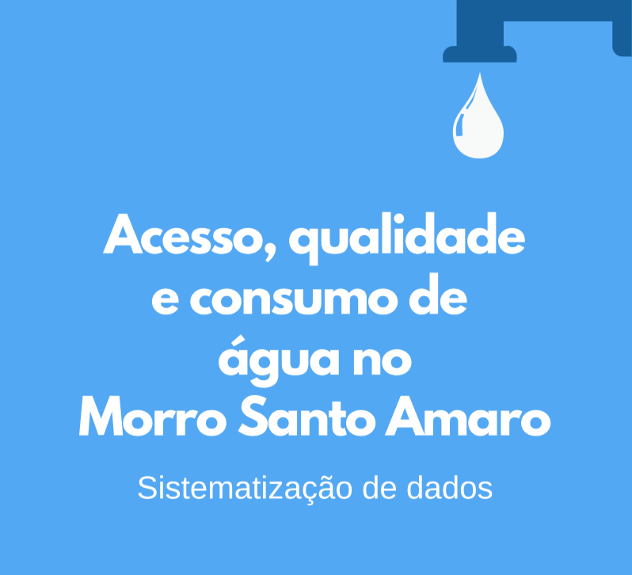

Memória, território e a relação da comunidade do Morro Santo Amaro com suas águas.
O Observatório do Santo Amaro, núcleo do projeto Ame o Santo Amaro dedicado ao levantamento de dados sobre a comunidade, divulgou os resultados de uma pesquisa com 46 moradores do Morro Santo Amaro, no Rio de Janeiro, realizada entre abril e junho de 2024 sobre acesso, qualidade e consumo de água.
Os números expõem uma realidade preocupante: 55,6% dos entrevistados acreditam que o esgoto da região não funciona adequadamente, 40% relatam interrupções semanais no abastecimento e 33,3% classificam a água recebida como péssima. Os impactos vão além do incômodo — 68,8% já tiveram problemas de saúde relacionados à água, ou conhecem alguém que teve, mas 60% nunca contataram a concessionária Águas do Rio, e a maioria dos que tentaram avalia o atendimento como ruim. A pesquisa ainda mostra que 73,3% dos moradores não conhecem seus direitos relacionados ao abastecimento.
Esse levantamento importa porque transforma experiências individuais em evidência coletiva: um problema historicamente invisível para o poder público passa a ter dados concretos que embasam cobranças por melhorias e fortalecem a comunidade no conhecimento de seus direitos. É essa a missão do Observatório desde sua criação em 2023 — pesquisar, sistematizar e publicizar dados sobre o Morro Santo Amaro.
Confira o relatório completo com todos os dados da pesquisa.

Levantar dados sobre o acesso, a qualidade e o consumo de água no Morro Santo Amaro, mapeando a percepção dos moradores sobre abastecimento, infraestrutura, saúde e direitos relacionados ao serviço de água.
Pesquisa quantitativa (survey) aplicada via Google Forms entre abril e junho de 2024, com 24 questões (22 fechadas e 2 abertas). Foram coletadas 46 respostas de moradores de diferentes localidades do Morro Santo Amaro.
55,6% dos moradores avaliam que o esgoto não funciona adequadamente, 40% relatam falta d'água semanal e 33,3% classificam a água recebida como péssima. 68,8% já tiveram problemas de saúde relacionados à água e 73,3% desconhecem seus direitos quanto ao abastecimento.
Pesquisadores(as) e voluntários(as) podem somar a esta frente. Fale com a gente.
Entrar em contato